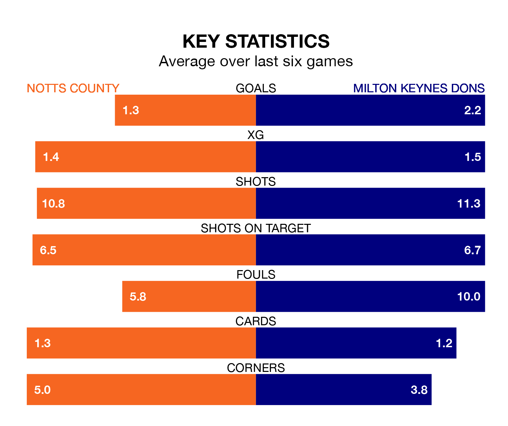

Notts County are on a poor run ahead of hosting Milton Keynes Dons at Meadow Lane on Monday, with just four points collected from their last six games.
County have picked up one win and one draw in their last six EFL League Two games, and face a Dons side whose last six games have brought four wins and two losses.
With 77 goals in 40 games so far this season, County are the league's third-highest scorers with 1.9 goals per game. But they are conceding more than average too, letting in 76 goals at a rate of 1.9 per game.
Milton Keynes are also above average scorers, with 1.7 goals per game, compared to a league average of 1.5. They have conceded 1.3 goals per game.
In Macaulay Langstaff, the hosts have the league's sharpest shooter so far this season. He has notched 24 goals in 40 appearances.
His goal rate of one every 146 minutes is slightly quicker than that of Max Dean, Dons' top scorer with a goal every 145 minutes, and a total of 11 goals in 24 games.
The Dons are fourth in the table after 41 games, of which they have won 21 and drawn seven, earning 70 points.
County are 12 places behind the away team in 16th, with 15 wins and six draws putting them on 51 points.
County's last match was on Friday, a 2-1 loss against Swindon Town, with Alassana Jatta getting the goal for County.
Milton Keynes beat Walsall 5-0 last time out, also on Friday, with Dean (two), Alex Gilbey, Emre Tezgel and Joe Tomlinson on the scoresheet.
Monday's match will be refereed by Scott Simpson, who has taken charge of 13 EFL League Two games so far this season, issuing five red cards and booking 65 players. He has awarded seven penalties.
The last County game Simpson refereed was a 2-0 away win against Salford City on September 15. He is yet to oversee a match featuring Milton Keynes this season.
Updated: 10:31 (UTC), 31/03/24